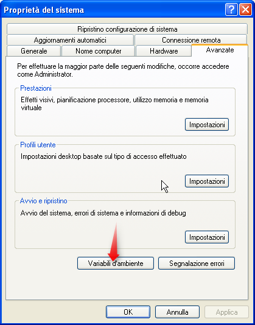
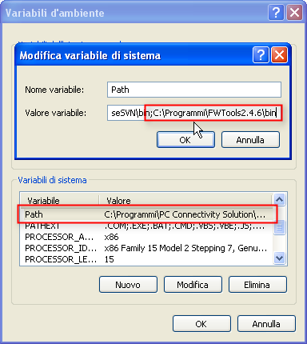
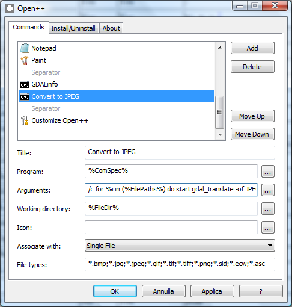

Non avrei (forse) mai scritto il tutorial che sto per scrivere, se non fossi “caduto” per caso in questo sito, un forum italiano dedicato al mondo delle mountain bike. Non ricordo esattamente come ci sia finito, probabilmente mentre facevo ricerche su qualcosa di collegato ad Atlante Italiano (il Portale Cartografico Nazionale). Il sito del forum di cui sopra è ovviamente in qualche modo legato al mondo dei GIS – oggi i ciclisti usano spesso GPS e cartine – ma non mi sarei mai aspettato di trovare un tutorial su come utilizzare gdal_translate in batch da riga di comando. Ma andiamo al tutorial.
Immaginate di avere una cartella con decine di file GeoTiff (o anche delle orribili coppie .tif/.tfw) , ed di volere convertire in batch (ovvero una conversione in blocco di tutti questi file) in un formato raster GIS compresso come il jpg2000 o l’ECW. Il cuore del processo sarà per l’appunto gdal_translate, un’utility che si trova in FWTools, e il cervello saranno i “cicli for” a partire dal prompt dei comandi.
Il funzionamento di gdal_translate è molto semplice. Immaginiamo di voler convertire un file GeoTiff in formato ECW; questi i passi da seguire:
- aprite la shell di FWTools (si trova in Avvio>Tutti i Programmi>FWTools 1.x.x)
- scrivete un comando di questo tipo
>gdal_translate -of ECW c:\tanto\tif\topografica1.tif c:\tanto\ecw\topografica1.ecw
Come vedete è un comando potente e di semplice utilizzo:
- prima il nome del comando (gdal_translate)
- poi bisogna fissare il formato di output con “-of” (output format)
- poi il nome del file di input (metto le virgolette per evitare di avere problemi con nomi di cartelle e file con spazi)
- ed in fine il nome del file di output (come sopra)
In pochi secondi avrete così convertito il vostro singolo file GeoTiff in formato ECW, mantenendo inalterate le informazioni geografiche. Lo potrete verificare con il comando gdalinfo.
Come faccio a convertirne ad esempio 40 senza scrivere 40 volte il comando di cui sopra? Mi viene in aiuto un “classico” ciclo for che eseguirò da riga di comando.
Immaginiamo di avere creato due cartelle, una con i file di input (C:\tanto\tif\) ed un’altra per i file di output (C:\tanto\ecw\). Il comando per convertire in solo colpo le vostre 40 immagini GeoTiff in formato ECW sarà il seguente:
>for %i in ("c:\tanto\tif\*.tif") do gdal_translate -of ECW "%i" "c:\tanto\ecw\%~ni.ecw"
Anche questo comando lo lancerete dalla shell di FWTools. Anche questo è un comando semplice, ma richiede delle spiegazioni. Il comando di sopra tradotto in lingua italiana, potrebbe suonare così: “per (for) ogni file (%i) tif (*.tif) contenuto nella cartella c:\tanto\tif\, esegui (do) gdal_translate, e scegli ECW come formato di output (-of ECW)”. Ecco un esploso dei comandi:
- for (dichiarate l’inizio del ciclo)
- %i (è una variabile che creerete grazie al ciclo e conterrà, per ogni ciclo, il percorso completo del file della cartella di input)
- (c:\tanto\tif\*.tif) (specificate quale sia la cartella ed il formato di input)
- do (è il comando che fa eseguire una determinata operazione)
- gdal_translate -of ECW (sapete già cosa vuol dire)
- “%i” (il percorso completo del file di input)
- c:\tanto\ecw\ (la cartella di output)
- %~ni.ecw (solo il nome del file di input senza estensione, seguito dall’estensione di output)
Scritto il comando e dato invio, inizierà il processo di conversione; vi andate a fare un caffé ed al ritorno troverete tutti i file ECW nella cartella di output.
Ma torniamo al forum sulle mountail bike. Il thread che mi ha stimolato e che mi ha fatto capire diverse cose è questo: è composto da molte pagine, e contiene diverse “chicche”. Se ne scoprite qualcuna di interessante, perché non ci scrivete un post e lo pubblichiamo su TANTO. Colgo l’occasione per fare i complimenti agli utenti di questi forum.
Per saperne di più sui “cicli for” nel prompt del dos ecco alcuni link:
- Windows XP Professional Product Documentation
- Daily Cup of Tech » Quickly Perform a Function on Several Files
- Still More Windows Command Shell Goodies – the FOR Command
Tutte le utility di FWTools, sono opencource e disponibili anche per Linux. Tutto quello di cui abbiamo parlato si può fare anche in Linux, con tutte le possibilità che da in più la riga di comando in questo ambiente. Il mio problema è che non sono tanto bravo con Linux.
Tutti i comandi di sopra possono essere raffinati. Si possono scegliere molte cose oltre al formato di output: le dimensioni di output, il tipo di compressione, l’assegnazione del corretto sistema di coordinate, etc. Per tutte queste opzioni vi rimando alla pagina ufficiale di gdal_translate.
Per convertire in formato jpg2000 basterà scrivere “-of jp2kak”. Potrete fare anche conversioni in senso inverso da ECW a GeoTiff, ed in questo caso “-of Gtiff”.
Buon divertimento!!
L'articolo FWTools: convertire in batch da tif, ecw e jpg2000 a tif, ecw e jpg2000!! è apparso originariamente su TANTO. Rispettane le condizioni di licenza.
]]>Uno dei servizi che uso, e che vi consiglio, per analizzare i dati di accesso ai siti è 103bees. E’ un servizio specializzato nell’analisi delle parole chiave usate nei motori di ricerca, che hanno portato traffico verso il vostro sito web.
Il 60% del traffico su questo sito arriva proprio dai motori di ricerca, e di questo il 90% da Google. Queste, ad esempio, le parole chiave che hanno portato più traffico nell’ultima settimana:
- fwtools
- tanto
- convertire ecw in geotiff
- conversione coordinate
- georeferenziazione map 3d
- batch dos ciclo file cartella
- excel +conversione +coordinate
- openlayers
- aprire file .dwg linux
Nascoste tra queste parole chiave ci sono alcune domande dei lettori di TANTO, e prendendo spunto da questi e da altri dati sulle statistiche di accesso, ho deciso di rispondere a 4 domande.
Le risposte possibili erano diverse. Ho cercato, nei limiti delle mie conoscenze, di proporre delle soluzioni non dipendenti dalla piattaforma in uso, e di minimo impatto sul portafogli.
Come convertire un file .ecw in GeoTiff?
E’ una domanda la cui risposta si trova nascosta nel più letto articolo di questo Blog: “FWTools: convertire in batch da tif, ecw e jpg2000 a tif, ecw e jpg2000!!”. La risposta è “utilizzate FWTools“. Di FWTools non parlo, trovate diverse informazioni su questo sito e molte di più sul web, ma eccovi la procedura da seguire:
- aprite la shell di FWTools
- posizionatevi nella cartella in cui è contenuto il file .ecw da convertire (non è necessario, è solo per semplicità di spiegazione)
- scrivete “gdal_translate -of GTiff img1.ecw img1.tif” e premete INVIO
- verrà creato un file GeoTiff nella stessa cartella in cui è presente il file .ecw
Il parametro “-of” si usa per specificare il formato di output, ed a seguire il nome del file di input e poi quello di output. Fine
Come sovrapporre uno shape file a google earth?
Questa è una domanda classica per la quale ci sono diverse risposte possibili. Tre di queste:
- usare shp2kml
- usare un’altra utility di FWTools, ogr2ogr
- sfruttare le grandi capacità di GeoServer (è un suggerimento di Andrea Aime)
Il primo è un semplice programma per Windows da scaricare ed installare, che non richiede spiegazioni.
Il secondo richiede che seguiate i seguenti passi:
- aprite la shell di FWTools
- posizionatevi nella cartella in cui è contenuto il file .shp da convertire (non è necessario, è solo per semplicità di spiegazione)
- scrivete “ogr2ogr -f KML shp1.kml shp1.shp” e premete INVIO
- verrà creato un file .kml nella stessa cartella in cui è presente il file .shp
Il parametro “-f” si usa per specificare il formato di output; a seguire il nome del file di output e poi quello di input. Attenzione: è invertito l’ordine dei file (prima output e poi input).
La terza possibilità è usare GeoServer:
Se c’è la necessità di effettuare uno styling della mappa generata (colore poligoni, spessore linee ecc) o di creare popup customizzati e associati agli attributi dello shapefile o, infine, per creare mappe con filtri dinamici, si può utilizzare GeoServer, sia come WMS che fornisce il KML a Google Earth “al volo” che offline, come strumento di preparazione del KML (si fa la GetMap a GeoServer e si salva il kml su disco una volta per tutte).
Fine
Come convertire i dati raccolti con il vostro GPS in formato Google Earth (.kml/.kmz)?
Basta usare il servizio di conversione che trovate su GPSVisualizer. Legge da quasi qualsiasi formato GPS e converte in un enorme numero di altri formati, tra i quali quelli di Google Earth (.kml/.kmz).
Se vorrete installare sul pc l’applicazione da cui è derivato questo servizio web, dovrete andare sul sito di GPSBabel, scaricarlo ed installarlo. L’elenco dei formati che gestisce è notevole.
Come convertire coppie di coordinate a partire da un foglio di calcolo(excel,calc, etc.)?
Anche in questo caso ci viene in aiuto FWTools. Lo strumento da utilizzare stavolta è “cs2cs“ (coordinate system to coordinate system). In questo video vedrete come fare una semplice conversione di coordinate, da Lat Lon WGS84 a UTM 33 Nord ED50, a partire da un foglio di calcolo.
Nel video noterete che per impostare il sistema di coordinate di partenza e quello di arrivo, imposto degli strani codici. Si tratta dei codici EPSG, un’organizzazione che ha raccolto e strutturato un elenco dei sistemi di coordinate (e dei parametri relativi) usati nel mondo. Ogni sistema ha un codice numerico. Se cercate un particolare codice EPSG, potrete cercarlo usando il sito descritto qui. Fine
L'articolo 4 domande dei lettori di TANTO è apparso originariamente su TANTO. Rispettane le condizioni di licenza.
]]>E’ composto dai seguenti pacchetti:
- OpenEV: A high performance raster/vector desktop data viewer and analysis tool.
- MapServer: A web mapping package.
- GDAL/OGR: A library and set of commandline utility applications for reading and writing a variety of geospatial raster (GDAL) and vector (OGR) formats.
- PROJ.4: A cartographic projections library with commandline utilities.
- OGDI: a multi-format raster and vector reading techology noteworthy for inclusion of support for various military formats including VPF (ie. VMAP, VITD), RPF (ie. CADRG, CIB), and ADRG.
- Python: a scripting language.
Con questo post, voglio inaugurare una serie di piccolissimi tutorial dedicata a FWTools ed in particolare alle librerie GDAL/OGR. L’installazione di FWTools è molto semplice e non ne parlerò. Le operazione che andremo a svolgere, le faremo tutte da “riga di comando”.
Come ricavare le metainformazioni disponibili in un file GeoTiff?
Per ottenere queste informazioni utilizzerò le librerie GDAL, ed in particolare l’utility gdalinfo. Ecco i passi da seguire:
- aprire la shell di sistema
- scrivere un comando con la seguente sintassi
"gdalinfo /percorso_file_geotiff/file_geottif.tif" - premere invio
Otterrò un’output di questo tipo:
Driver: GTiff/GeoTIFF Size is 7520, 5800 Coordinate System is: PROJCS[\"unnamed\", GEOGCS[\"unnamed\", DATUM[\"unknown\", SPHEROID[\"unnamed\",6378388,297.0000000000014, AUTHORITY[\"EPSG\",\"7022\"]], AUTHORITY[\"EPSG\",\"6265\"]], PRIMEM[\"Greenwich\",0], UNIT[\"degree\",0.0174532925199433], AUTHORITY[\"EPSG\",\"4265\"]], UNIT[\"metre\",1, AUTHORITY[\"EPSG\",\"9001\"]], AUTHORITY[\"EPSG\",\"3004\"]] Origin = (2366320.000000,4218280.000000) Pixel Size = (1.00000000,-1.00000000) Metadata: AREA_OR_POINT=Area TIFFTAG_XRESOLUTION=300 TIFFTAG_YRESOLUTION=300 TIFFTAG_RESOLUTIONUNIT=2 (pixels/inch) Corner Coordinates: Upper Left ( 2366320.000, 4218280.000) Lower Left ( 2366320.000, 4212480.000) Upper Right ( 2373840.000, 4218280.000) Lower Right ( 2373840.000, 4212480.000) Center ( 2370080.000, 4215380.000) Band 1 Block=7520x16 Type=Byte, ColorInterp=Red Band 2 Block=7520x16 Type=Byte, ColorInterp=Green Band 3 Block=7520x16 Type=Byte, ColorInterp=Blue
Magari a voi non suscita alcun emozione, ma questo semplicissimo comando ci restituisce un’informazione spaziale strutturata utilissima. Se vorrete creare un file .txt, basterà scrivere sulla shell la seguente stringa:
\"gdalinfo /percorso_file_geotiff/file_geottif.tif > /percorso_export/nomefile.txt\"
Il comando esegue anche operazioni più sofisticate, per le quali troverete informazioni sulla pagina ufficiale di questa utility e anche cercando un po’ sul web.
L'articolo FWTools: un kit di applicazioni GIS irrinunciabile è apparso originariamente su TANTO. Rispettane le condizioni di licenza.
]]>Utilizzerò l’utility ogrinfo, presente nel pacchetto FWTools. E’ un applicazione che va lanciata dal prompt dei comandi. Vediamo una serie di esempi applicati a un file con estensione .shp (ArcView shapefile):
>ogrinfo gb_orto.shp
mi restituirà
INFO: Open of `gb_orto.shp' using driver `ESRI Shapefile' successful. 1: gb_orto (Polygon)
Se volessi avere le metainformazioni su questo layer poligonale – 1: gb_orto (Polygon) – scriverò
>ogrinfo -summary gb_orto.shp gb_orto
e otterrò
INFO: Open of `gb_orto.shp' using driver `ESRI Shapefile' successful. Layer name: gb_orto Geometry: Polygon Feature Count: 698 Extent: (2244520.000000, 3929160.000000) - (2578399.500000, 4288120.000000) Layer SRS WKT: (unknown) RASTER: String (255.0)
In questo caso ottengo molte più informazioni:
- il numero di feature presenti nel layer (698 poligoni)
- l’estensione geografica del layer (il bounding box)
- il sistema di coordinate – SRS Spatial Reference System – quando è possibile ricavarlo dal file (nel mio esempio non era possibile, come spesso accade con gli shapefile)
- i campi presenti nel database e la loro tipologia (c’è un solo campo che si chiama “RASTER”, e di tipo String e con una larghezza di 255 caratteri)
Per gli appofondimenti vi lascio alla pagina ufficiale e alla rete.
L'articolo FWTools: estrarre le metainformazioni da un file vettoriale è apparso originariamente su TANTO. Rispettane le condizioni di licenza.
]]>A Febbraio del 2006 – tantissimo tempo fa … – ho scritto un piccolo post sull’installazione di MapServer in ambiente Windows su un sistema in cui fosse già installato un webserver (Apache in particolare).
E’ stato un post che ha ricevuto molte letture, ma che ha anche subito qualche “legnata tecnologica”. Lo avevo scritto infatti non dentro il motore di questo blog (WordPress), ma dentro Writely.
Cosa è Writely? E’ nientepopodimeno che l’applicazione online su cui è basato l’editor di testo di Google Docs, comprata per l’appunto da Google proprio in quell’anno.
Ho scritto l’articolo, ho inserito anche delle immagini d’aiuto alla comprensione del testo, ed ho pubblicato tutto su questo blog con un click; il testo è stato contestualmente archiviato sui server di TANTO, mentre le immagini sono rimaste sui server di Writely. Questi non sono stati spenti subito e, per diverso tempo, questo vecchio glorioso articolo non ha subito alcuna conseguenza dal passaggio di Writely a Google. Spenti i server, sono sparite le immagini ed in qualche modo anche la leggibilità del post in oggetto. Ho provato a ripescarle dall’Internet Archive Wayback Machine, ma senza fortuna.
In ogni caso dovevo rimediare da tempo. Avevo rimosso dalla memoria il problema (sorry  ), e un commento recente mi ha messo nuovamente davanti alla cruda realtà (grazie riccardo). L’articolo inoltre è datato anche nei contenuti, e valeva la pena dargli una rinfrescata.
), e un commento recente mi ha messo nuovamente davanti alla cruda realtà (grazie riccardo). L’articolo inoltre è datato anche nei contenuti, e valeva la pena dargli una rinfrescata.
MapServer su Windows
Installare MapServer è cosa semplice in qualsiasi ambiente (forse il massimo è su Linux); può sembrare meno semplice farlo su server in produzione con diversi servizi già installati e configurati, specie se vogliamo usare degli installer grafici e magari chiudere gli occhi.
I file binari per Windows sono contenuti in questi tre pacchetti:
In questa guida sfrutteremo FWTools, di cui abbiamo parlato diverse volte.
Installazione passo passo di MapServer
Il prerequisito è quello di installare e scaricare FWTools per Windows dal sito ufficiale, e poi lanciarne l’installazione. Io di solito lo faccio scegliendo le opzioni visibili in figura.

I file vengono estratti di default nella cartella “C:\Programmi\FWToolsx.x.x“. L’eseguibile di MapServer – mapserv.exe – è uno dei file a corredo di FWTools e lo troverete nella cartella “C:\Programmi\FWToolsx.x..x\bin“.
Copiatelo nella cartella CGI di Apache (o in una qualsiasi cartella in cui il web server può lanciare applicazioni di questo tipo). Sul PC da cui scrivo la cartella è “C:\Programmi\Apache Software Foundation\Apachex.x\cgi-bin”
Copiare l’eseguibile non basta perché ci sono diverse dipendenze da rispettare. Per soddisfarle basterebbe copiare tutti i file contenuti in “C:\Programmi\FWToolsx.x..x\bin” nella cartella CGI, ma non è una procedura “pulita”. E’ più corretto impostare delle variabili d’ambiente.
La prima è il PATH, in cui inseriremo proprio la cartella “C:\Programmi\FWToolsx.x..x\bin“. Per farlo basta aprire le “Proprietà del sistema” di Windows e cliccare su “Variabili d’ambiente”.

Tra quelle già definite troverete proprio PATH. Modificatela inserendo nel campo “Valore variabile”, a fine riga, il percorso della cartella bin di FWTools: inserite prima un “;”.

C’è da impostare ancora una variabile d’ambiente in quanto MapServer deve “sapere” dove sono i file in cui sono definiti i sistemi di proiezione. La cartella in questo caso è “C:\Programmi\FWToolsx.x.x\proj_lib” e la variabile è PROJ_LIB.
Questa (di solito) non è – come PATH – già esistente e la dovrete creare cliccando sul tasto “Nuovo” ed inserire i valori come nella figura sottostante.

A questo punto riavviate il PC, aprite il browser e lanciate un URL di questo tipo: http://vostrosito/cgi-bin/mapserv.exe
Se avrete come risposta la stringa “No query information to decode. QUERY_STRING is set, but empty.“, vorrà dire che tutto è andato a buon fine.
Non vi resta che creare delle belle applicazioni di web-mapping.
L'articolo Installare MapServer su Windows con Apache (riveduto e corretto) è apparso originariamente su TANTO. Rispettane le condizioni di licenza.
]]>Il catalogo è ancora limitato, ma negli stati uniti la copertura è buona anche ad una certa risoluzione. Per l’Italia ancora nulla ad alta risoluzione, ma c’è del materiale utile per carte regionali. Si tratta di immagini i-Cubed Landsat, sulle quali purtroppo cade (al momento) quanto detto in premessa, in quanto non è chiaro con che tipo di licenza vengano rilasciate. Si legge infatti:
[...]
it is best to assume that this imagery can not be used outside of OpenAerialMap
[...]
Tutto il catalogo è accessibile tramite WMS, e quindi potrete anche scaricare le immagini sul vostro PC e farne l’uso che la licenza vi consente. Per fare il download dell’immagini potrete ancora una volta usare FWTools:
- scaricate FWTools: Linux, Windows
- installatelo
- scaricate il file xml che descrive il servizio WMS di OpenAerialMap (http://openaerialmap.org/static/gdal_wms.xml) e salvatelo nella cartella in cui avete installato FWTools
- aprite la shell di FWTools
- scrivete un comando con questa sintassi: gdal_translate -projwin 12.06979 38.59784 15.86623 36.0124 -outsize 5000 5000 -of JP2KAK gdal_wms.xml palermo.jp2
FWTools è onnivoro in questo contesto e può quindi gestire come source fonti WMS. Con questa sintassi scaricherò una foto che copre la Sicilia in formato JPEG2000, che potrei usare per una carta al 250.000 (qui sotto uno screenshot dell’area). Le coordinate che leggete nel comando sono quelle del vertice in alto a sinistra e di quello in basso a destra.

Il post è (quasi) una traduzione molto veloce di un post del bravissimo Christopher Schmidt.
L'articolo OpenAerialMap: un collezione libera di fotografie aeree è apparso originariamente su TANTO. Rispettane le condizioni di licenza.
]]>Su un blog che vi consiglio di leggere – thematicmapping blog – ho scoperto dell’esistenza di GDAL2Tiles, un software a riga di comando che consente di pubblicare -rapidamente e con efficacia – una carta raster nelle seguenti modalità: Google Maps, OpenLayers and Google Earth. E’ uno strumento incluso in GDAL/OGR 1.5.0, e quindi anche nell’ultimo FWTools.
 Il lavoro che fa GDAL2Tiles è quello di leggere un’immagine georeferenziata, e suddividerla in tasselli da 256 x 256 pixel, con una struttura a piramide (il nome del pacchetto è in qualche modo descrittivo della funzione che svolge). In altre parole a partire da una raster, ne vengono generate diverse a risoluzioni decrescenti, che vengono suddivise in sezioni da 256 pixel (vedi figura).
Il lavoro che fa GDAL2Tiles è quello di leggere un’immagine georeferenziata, e suddividerla in tasselli da 256 x 256 pixel, con una struttura a piramide (il nome del pacchetto è in qualche modo descrittivo della funzione che svolge). In altre parole a partire da una raster, ne vengono generate diverse a risoluzioni decrescenti, che vengono suddivise in sezioni da 256 pixel (vedi figura).
Il tassellamento e la piramidazione sono molto efficienti per distribuire raster sul web, in quanto l’immagine potrà essere visualizzata direttamente alla risoluzione adatta al livello di zoom attivo, e verranno scaricati soltanto i tasselli dell’area che stiamo osservando a video. E’ il meccanismo che sta dietro al motore di Google Maps e a quello dei maggiori provider di cartografia online.
Andiamo alla parte pratica e proviamo a mettere online una delle fantastiche immagini presenti su Natural Earth II. Si tratta di file (qui sotto un esempio) che rappresentano la terra, così come sarebbe senza l’influenza dell’uomo (immaginate Parigi coperta da una foresta temperata …); una rappresentazione del pianeta, precedente all’era moderna.

Per il mio esempio ho scaricato la tavola denominata “Ocean with layered depth tints“.
La prima cosa che ho fatto è stata georeferenziarla. Conosco le coordinate dei 4 vertici della tavola, ho FWTools installato, e dalla shell FWTools lancio il seguente comando:
> gdal_translate -a_srs EPSG:4326 -gcp 0 0 -180 90 -gcp 16200 0 180 90
-gcp 16200 8100 180 -90 NE2_modis3.jpg NE2_modis3.tif
gdal_translate è una delle utility presenti in FWTools; questo il significato dei parametri usati:
-a_srs per assegnare il corretto sistema di coordinate (EPSG:4326)
-gcp per assegnare i vari punti di controllo (prima le coordinate in pixel, e poi quelle del sistema di coordinate scelto)
A partire dalla jpeg scaricata, ho creato un tif georeferenziata, assegnando come punti di controllo i 4 vertici della carta.
Dovrò adesso processare l’immagine con gdalwarp:
> gdalwarp -t_srs EPSG:4326 NE2_modis3.tif NE2_modis3_4326.tif
-t_srs è il parametro per assegnare il sistema di coordinate.
La mia immagine di partenza è di 16200 x 8100 pixel; GDAL2Tiles la tassellerà e la piramiderà. Ogni tassello che andrò a generare sarà di 256 x 256 pixel. I livelli di piramidazione, corrispondenti ai livelli di zoom possibili, rispecchieranno lo schema della tabella sottostante.
|
Livello di Zoom |
Dimensione immagine |
Tasselli |
Numero totale di tasselli |
|
1 |
512 x 256 |
2 x 1 |
2 |
|
2 |
1024 x 512 |
4 x 2 |
8 |
|
3 |
2048 x 1024 |
8 x 4 |
32 |
|
4 |
4096 x 2048 |
16 x 8 |
128 |
|
5 |
8192 x 4096 |
32 x 16 |
512 |
|
6 |
16384 x 8192 |
64 x 32 |
2048 |
|
7 |
32768 x 16384 |
128 x 64 |
8192 |
Per il mio esempio mi “accontenterò” di un livello di zoom massimo pari a 5 e, prima di dare in pasto il mio file a GDAL2Tiles, ne ridurrò le dimensioni di conseguenza:
> gdal_translate -outsize 8192 4096 NE2_modis3_4326.tif
NE2_modis3_4326_5.tif
-outsize per specifcare la larghezza e l’altezza dell’immagine di output
Non mi resta che “passare” a GDAL2Tiles, l’ultimo file generato:
> gdal2tiles -title \"Pubblicare una Raster\" -publishurl http://www.nostroserver.org/maptiles/ -v NE2_modis3_4326_5.tif cartella_di_output
-title per dare un titolo al progetto
-publishurl per definire l’url delle mappe che pubblicheremo
-v per avere un output “verboso” del comando, e leggere a video il dettaglio di tutte le operazioni eseguite da GDAL2Tiles
L’output del processo sarà una cartella con il seguente contenuto:
- una sottocartella per ognuno dei livelli di piramidazione (in ognuna di queste diverse altre sottocartelle con i vari tasselli da 256 x 256 pixel)
- un file denominato “openlayers.html”, ovvero un’interfaccia web basata su OpenLayers
- un file denominato “googlemaps.html”, ovvero un’interfaccia web basata su Google Maps
- un file denominato “tilemapresource.xml”, ovvero lo schema della struttura dei tasselli di mappa
- un file denominato “cartella_di_output.kml”, che ci consentirà di visualizzare in Google Earth l’immagine processata (vedi figura sotto)
Bisognerà fare l’upload di tutti i file creati da GDAL2Tiles, all’interno della cartella specificata sopra con il parametro -publishurl, e testarne infine il risultato.
Qui potete testare la visualizzazione della mappa in OpenLayers, qui in Google Maps e qui in Google Earth.

Il file con l’interfaccia basata su OpenLayers ha bisogno di una patch. Qui il file con la patch applicata.
Un bravo webmaster è in grado di portare a termine questa procedura, senza sapere nulla di cartografia digitale? Probabilmente si, ma magari soltanto in modo meccanico e pertanto non saprà applicarla ad esempi differenti da quelli descritti (immaginate di partire da un 25000 IGM).
Non ci si improvvisa cartografi online, e bisogna sempre documentarsi. Strumenti come questo fanno venire la voglia di farlo e consentono una più rapida valorizzazione e diffusione di queste tematiche. E’ per questo che mi piace GDAL2Tiles.
L'articolo Pubblicare facilmente una carta raster sul web è apparso originariamente su TANTO. Rispettane le condizioni di licenza.
]]>Tom parla di una catena di coffee shop canadese, Tim Hortons, e ci racconta di quanto sia importante (per un canadese) sapere dove possa essere il punto vendita più vicino della catena. Tanto importante che un forum di appassionati di GPS ha creato delle tabelle con le coppie di coordinate di tutti i punti vendita nel paese. Sia in formato .xls, che .csv. Tom nel post mostra come sfruttare ogr2ogr, una utility contenuta in FWTools, per convertire queste tabelle in formato .gpx (un formato di scambio dati per GPS) e in formato .kml (Google Earth).
Il passi sono i seguenti:
- apro il file excel che contiene i POI dei punti vendita
- salvo il file in formato .csv (lo chiamo ad esempio th.csv)
- sfrutto la capacità di OGR di leggere informazioni spaziali anche da una semplice tabella, sfruttando il supporto della Virtual Datasource. Per sfruttare questo tipo di connessione creerò un file .ovf così fatto:
<OGRVRTDataSource>
<OGRVRTLayer name="th">
<SrcDataSource relativeToVRT="1">./th.csv</SrcDataSource>
<GeometryType>wkbPoint</GeometryType>
<LayerSRS>WGS84</LayerSRS>
<GeometryField encoding="PointFromColumns" x="Longitude" y="Latitude"/>
</OGRVRTLayer>
</OGRVRTDataSource>
Per creare un file .kml dovrò soltanto aprire la shell di FWTools, posizionarmi nella cartella in cui ho salvato i file .ovf, e scrivere:
ogr2ogr -f KML nomefile.kml th.ovf
Con il parametro “-f” specifico il formato, poi dichiaro il nome del file di destinazione e infine quello del sorgente.
Per creare un file .gpx userò invece questa sintassi:
ogr2ogr -dsco GPX_USE_EXTENSIONS=YES -f GPX nomefile.gpx th.ovf
Il pametro “-dsco” mi consente di estendere il formato .gpx con campi non supportati nello schema GPX standard (ad esempio la Città ed il Telefono del punto vendità).
Questi sono soltanto due dei formati di output possibili, ma le possibilità sono veramente molte.
Grazie Tom.
L'articolo Da excel a gpx e kml: ogr2ogr è apparso originariamente su TANTO. Rispettane le condizioni di licenza.
]]>In particolare, Andrea ci mostrava come configurare Open++ in modo da “automatizzare” l’utilizzo di alcune utility dello swiss knife geospaziale per eccellenza: la libreria GDAL. Cercheremo pertanto di ottenere lo stesso risultato di allora, utilizzando stavolta l’ultima release di Open++ (v. 1.5.1).
Partiamo innanzitutto dal notare che la struttura della finestra di dialogo di Open++ è leggermente cambiata rispetto al passato. In luogo della scheda Language, ora ne sono presenti altre due: Install/Uninstall e About. Tralasciando l’ovvio significato di quest’ultima, la scheda Install/Uninstall è stata introdotta in sostituzione del vecchio installer, rendendo quindi l’applicazione portabile (può essere eseguita su una semplice chiavetta USB). La scheda principale (Commands) è apparentemente rimasta invariata rispetto al passato. Tuttavia, come ci fa notare Chiara (una lettrice che di recente ha commentato il post di Andrea, sollevando il problema), qualcosa è cambiato nella versione 1.5.1 (probabilmente anche prima): si tratta essenzialmente delle variabili utilizzabili nella casella di testo in cui andiamo a configurare i nostri comandi e, in particolare, quella degli argomenti (Arguments), come mostrato nella figura seguente.

Tali variabili, per quanto siano di una chiarezza quasi disarmante, risultano però meno flessibili da gestire rispetto alle versioni precedenti specie quando, come nel caso delle utility della libreria GDAL, il nostro comando accetta due o più parametri basati sul nome del file in ingresso. Fortunatamente, ci viene in soccorso l’unica FAQ presente nell’help file di Open++ (abbastanza criptico, in verità…) in cui è mostrato l’utilizzo di un ciclo for in linguaggio batch all’interno degli argomenti. Dunque, se è possibile usare il linguaggio batch, è altrettanto possibile usare anche i parametri batch e trarne così beneficio nel gestire i nomi dei file con o senza le loro estensioni. Ovviamente un ciclo for è applicabile anche su un singolo file e quindi il gioco è fatto!
Andando al sodo, per prima cosa consiglio di aggiungere la cartella dei binari di GDAL (o di FWTools, se preferite) all’interno della variabile PATH di sistema. Così potrete facilmente eseguire qualsiasi tool di GDAL all’interno di una qualsivoglia cartella, senza la necessità di dover riscrivere il suo percorso. In questo altro post sempre di Andrea (lo “swiss knife” di TANTO  ) è descritto come fare. Nel seguito, assumerò che lo abbiate fatto.
) è descritto come fare. Nel seguito, assumerò che lo abbiate fatto.
Quindi aggiungiamo un separatore delle opzioni di menù nella scheda Commands di Open++ e proviamo a configurare l’utility relativamente più semplice tra quelle trattate da Andrea: gdalinfo. Per prima cosa, scriviamo “GDALinfo” come titolo. Poi, trattandosi di una utility che si esegue da riga di comando, il programma da utilizzare sarà %ComSpec%, ovvero il nome della variabile di ambiente usata da Windows per indicare l’interprete da linea di comando (CLI), solitamente cmd.exe. Fin qui nulla di nuovo rispetto al post di Andrea. Negli argomenti, invece, scriveremo:
/k gdalinfo %FilePaths%
La spiegazione è piuttosto semplice: /k significa che vogliamo mantenere la finestra aperta dopo l’esecuzione del comando (altrimenti non riusciremmo a leggere le informazioni), gdalinfo è il nome dell’eseguibile dell’utility e, quindi, %FilePaths% è una variabile che rappresenta il vettore dei percorsi dei file passati come parametro. La directory di lavoro coincide con la directory del file stesso (%FileDir%), scegliamo eventualmente un’icona per rappresentare il comando, associamo il comando al singolo file e, infine, esplicitiamo le estensioni possibili del file in ingresso. Nulla di trascendentale, verrebbe da pensare.

Le cose si complicano, invece, quando andiamo a mettere in pratica l’esempio di Andrea relativo a gdal_translate. La procedura è sostanzialmente identica al caso precedente, ad eccezione dell’argomento. Tuttavia, come anticipavo in precedenza, ci viene ottimamente in soccorso l’unica FAQ a disposizione. E, pertanto, l’argomento da scrivere per convertire in formato JPEG sarà:
/c for %i in (%FilePaths%) do start gdal_translate -of JPEG %~nxi %~ni.jpg
che, in pratica, significa che per tutti i file contenuti nel vettore dei percorsi %FilePaths% (nel nostro caso, contiene un unico percorso in quanto selezioneremo un unico file) esegue il comando gdal_translate -of JPEG %~nxi %~ni.jpg, dove %~nxi è il nome compreso di estensione del raster sorgente, mentre %~ni è il nome privo di estensione del raster di destinazione, seguito poi da .jpg.

E non è ancora tutto! Visto che usiamo un ciclo for come argomento e che Open++ prevede l’associazione dei suoi comandi anche ad un insieme di file, possiamo quindi rendere la conversione in JPEG in modalità batch. A tal fine, creeremo sostanzialmente una copia del Convert to JPEG in cui aggiungeremo solo il termine (batch) alla fine del titolo e poi cambieremo l’opzione Associate with da Single File a Multiple File. Possiamo quindi selezionare più file raster e da menù contestuale scegliere l’opzione Convert to JPEG (batch) per avere la conversione in blocco di tutti i file selezionati. E’ quindi adesso facile definire altri comandi di conversione verso altri formati raster supportati da GDAL …e non solo! 

Per i più pigri, ecco il file di configurazione OpenXX.ini dei comandi descritti in precedenza. Basta copiarlo nella cartella contenente Open++, eseguirlo …et voilà …si otterrà la stessa identica configurazione. Si tratta di un metodo semplice e rapido per condividere le proprie raccolte di comandi con i colleghi.
Una nota a margine: in caso si decida di definire comandi per effettuare operazioni di coordinate, occorre aggiungere alla variabile PATH di sistema anche il percorso della cartella di GDAL (o eventualmente della libreria proj.4) che contiene le definizioni dei vari sistemi cartografici definiti da EPSG.
Infine, un grosso ringraziamento a Chiara per averci costretti a rivalutare un post obsoleto.
L'articolo GDAL in due clic con Open++ è apparso originariamente su TANTO. Rispettane le condizioni di licenza.
]]>In particolare:
- Deegree 2.1pre
- FWTools 1.0.6
- GDAL/OGR 1.3.2
- GeoServer 1.4.0RC1
- GRASS 6.2RC2
- gvSIG 1.0RC2
- Ka-Map 1.0b1
- MapBender 2.4
- MapBuilder 1.0.1
- MapGuide 1.0.2
- MapServer 4.8.4
- OpenLayers 2.1
- Ossim 1.6.6
- PostGIS 1.1.5
- QGIS 0.74
- uDig 1.1RC4
- WorldWind 1.3.5
Verrà presentato al prossimo meeting UNGIWG. L’immagine iso è scaricabile da ftp://tecproda01.fao.org/pub/gn_os ed è grande poco più di 2 Gb. Ne parla anche “The Earth is Square“.
L'articolo GeoNetwork Opensource DVD è apparso originariamente su TANTO. Rispettane le condizioni di licenza.
]]>